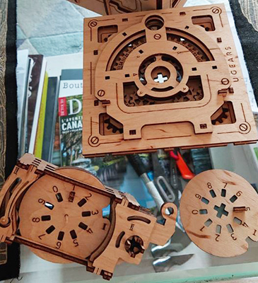
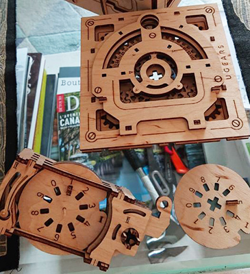

Éditrice scientifique
Experte langage
Je travaille depuis plus de dix ans dans l’édition scientifique.
Après deux ans de classes préparatoires à Paris, passées aussi bien à plancher sur les maths et la physique qu’à bouquiner, j’ai intégré une école d’ingénieur généraliste.
J’y ai suivi un enseignement scientifique et technique, complété par une formation en gestion de projet, marketing et management. Entre autres, j’ai appris à dresser des matrices SWOT et des diagrammes de GANTT (car un ingénieur accompli ne saurait se lancer dans le monde sans une panoplie complète d’acronymes !).
Une fois mon diplôme en poche, passionnée par la transmission de la connaissance, je suis naturellement venue au monde de l’édition.
J’ai rejoint le département sciences des éditions Belin pour la campagne scolaire de physique-chimie lycée (programme 2010-2012). J’ai ensuite jonglé quelques temps entre le scolaire, le parascolaire et la vulgarisation scientifique avant de me consacrer à plein temps à la vulgarisation.
Depuis 2019, je travaille en free-lance pour plusieurs maisons d’édition.
Mon univers
Galerie de projets
 

Comme le dit le disciple de Léonard, « Je sers la science et c’est ma joie » !
De mon point de vue, l’aventure scientifique dans laquelle l’humanité s’est embarquée est la plus palpitante de toutes. Les sciences m’offrent l’occasion de plaisirs renouvelés : goûter l’élégance d’une formule, comprendre un phénomène physique du quotidien, s’émerveiller que les humains aient réussi à poser un engin sur une comète...
J’essaie de transmettre cette même passion lorsque j’interviens sur un texte.
Sur mon temps libre, j’aime écrire pour les humains, mais aussi pour les ordinateurs. En manipulant le langage informatique, je retrouve ce qui m’attire dans le langage parlé : la structuration logique avec le travail sur la concision et sur le style, poussé à un degré encore plus élevé. J’ai commencé à coder au collège en QBasic. Mon premier programme (un jeu de touché-coulé), qui abusait fortement de bips émis par le haut-parleur interne, enchaînait les "IF", "GO TO" et les "BREAK" de façon chaotique. Le code est heureusement perdu sur une disquette 3,5 pouces. J’ai progressé depuis et appris d’autres langages : C++, Python...
Plus largement, j’aime expérimenter toutes sortes de choses. Rafistoler des objets et en construire ; bidouiller des Raspberry Pi ; inventer des bots Twitter ; modéliser mon univers en 3D dans le moteur Unity ; dessiner en voxels ; faire de la photogrammétrie...
Au-delà de la satisfaction de découvrir comment les choses fonctionnent et de créer moi-même, j’y vois une façon de me placer dans la lignée de la communauté des makers et du mouvement Do it yourself. Hacker les systèmes qui sont fermés, améliorer les objets et les interfaces mal faites, lutter contre l’obsolescence programmée, bref reprendre la main sur les objets du quotidien : c’est toute une philosophie !